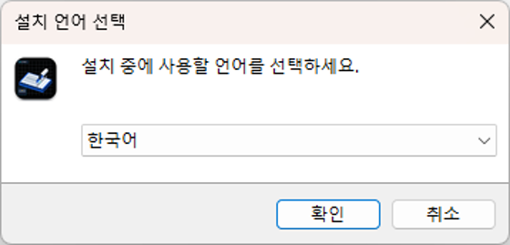
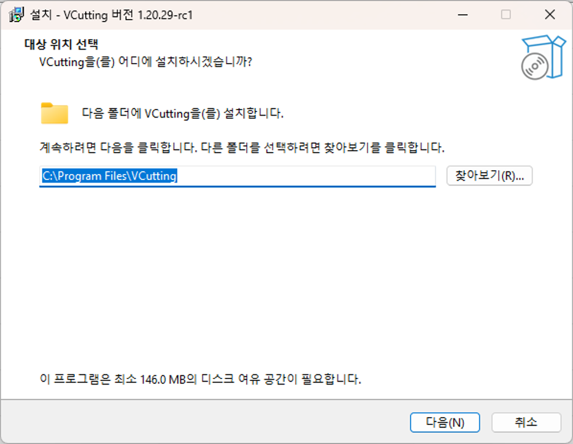
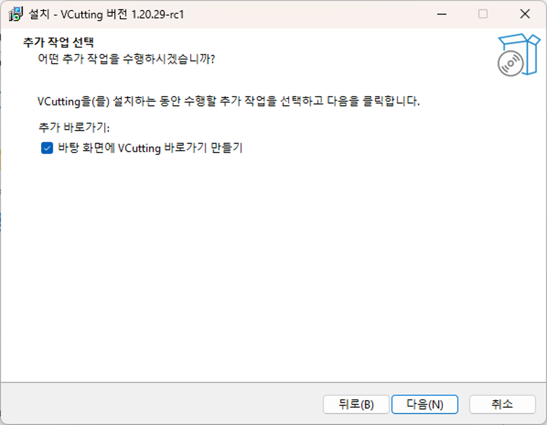
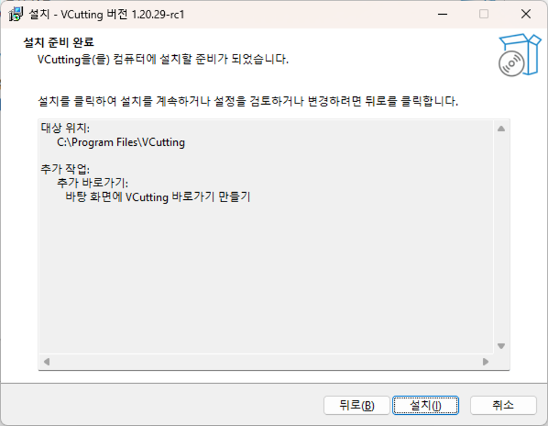
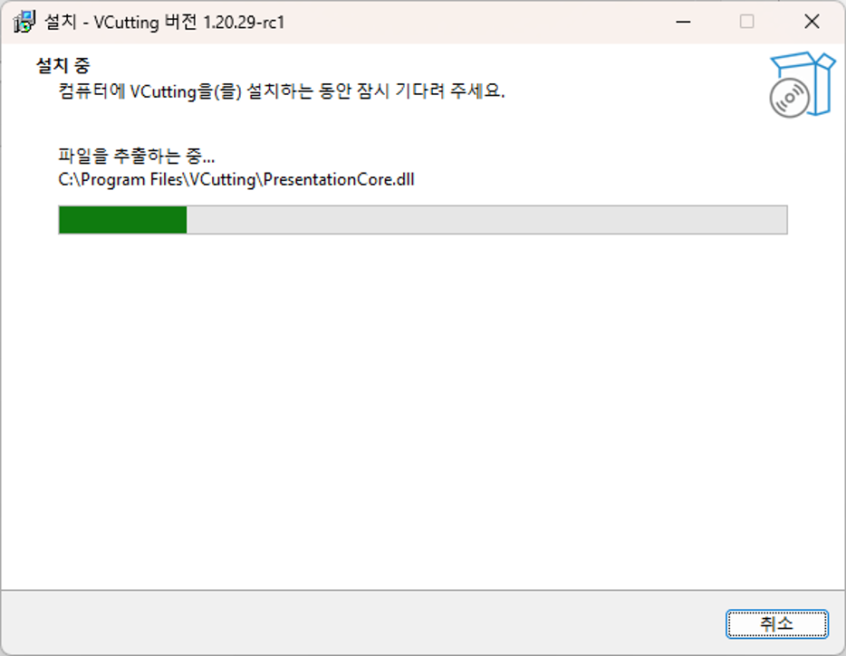
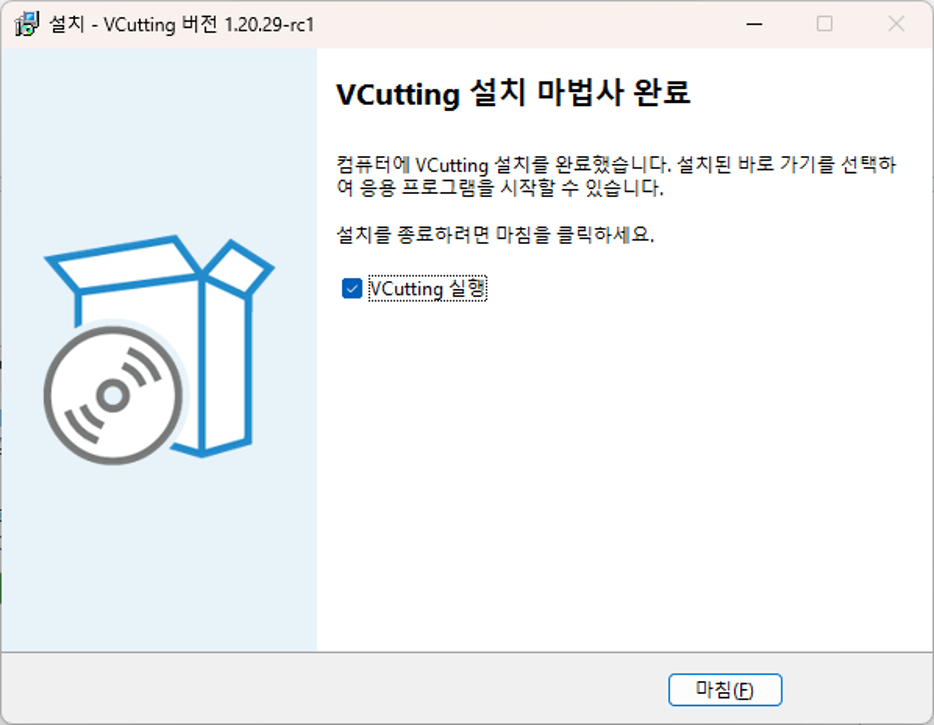

설치 재설치 제거
그림으로 따라 하는 설치
설치 전에 실행 중인 VCutting 제품군 프로그램을 종료하고 작업 파일을 저장하세요.
아래 그림은 사용자가 제공한 VCutting 1.20.29-rc1 설치 화면입니다(자료 수신: 2026-10-06). 실제 배포본의 버전, 필요 용량과 선택 상태는 다를 수 있습니다.
1. 설치 중 사용할 언어를 선택
설치 파일 VCuttingSetup.exe를 실행합니다. 관리자 권한 요청이 나타나면 승인합니다. 설치 중 사용할 언어를 선택하고 확인을 누릅니다. 그림은 한국어를 선택한 예입니다.

2. 설치할 대상 위치 선택
새 설치의 기본 위치는 C:\Program Files\VCutting입니다. 다른 위치를 사용하려면 찾아보기를 누르거나 경로를 입력한 뒤 다음을 누릅니다. 업데이트에서는 기존 설치 위치가 제안될 수 있습니다. 필요한 디스크 공간은 설치 화면에서 확인하세요. 그림의 146.0 MB는 해당 패키지의 예입니다.

3. 추가 작업 선택
바탕 화면 바로가기가 필요하면 바탕 화면에 VCutting 바로가기 만들기를 선택하고 다음을 누릅니다. 선택하지 않아도 설치할 수 있습니다. 그림은 바로가기를 선택한 예입니다.

4. 설치 준비 완료
대상 위치와 추가 작업을 확인합니다. 변경하려면 뒤로, 그대로 진행하려면 설치를 누릅니다.

5. 설치 중 화면
파일 복사와 설치가 끝날 때까지 기다립니다. 진행 막대와 현재 처리 중인 파일이 표시됩니다. 정상 진행 중에는 창을 닫지 마세요.

6. 설치 마법사 완료
설치가 완료되면 마침을 누릅니다. VCutting 실행을 선택하면 설치 마법사를 닫은 뒤 프로그램이 실행됩니다. 바로 실행하지 않으려면 선택을 해제합니다.

설치 파일 구조
VCutting은 설치 패키지 이름이며 이 도움말은 CosmicDesigner 프로그램을 설명합니다. 프로그램 실행 파일, 종속 파일 및 help 폴더를 함께 유지하세요. 설치 후 CosmicDesigner를 실행합니다.
업데이트 또는 재설치
동일한 제품 식별자를 사용하는 새 설치 파일은 기존 설치 위치를 제안합니다. 다섯 프로그램을 종료하고 중요한 DXF를 저장한 뒤 설치를 진행합니다.
제거
Windows 설정의 설치된 앱에서 VCutting를 제거하거나 시작 메뉴의 VCutting 제거를 실행합니다. 설치 프로그램이 배치한 실행 파일과 Help 전체가 함께 제거되며 별도 폴더에 저장한 사용자 DXF는 제거하지 않습니다.
설치되는 프로그램
VCutting 패키지에는 CosmicDesigner, CosmicConvert와 VCutting.Explorer, VCutting.Viewer, VCutting.Simulator, VCutting.Drawer가 포함됩니다. 시작 메뉴의 CosmicConvert로 SVG를 DXF로 변환할 수 있습니다. CosmicConvert 사용법